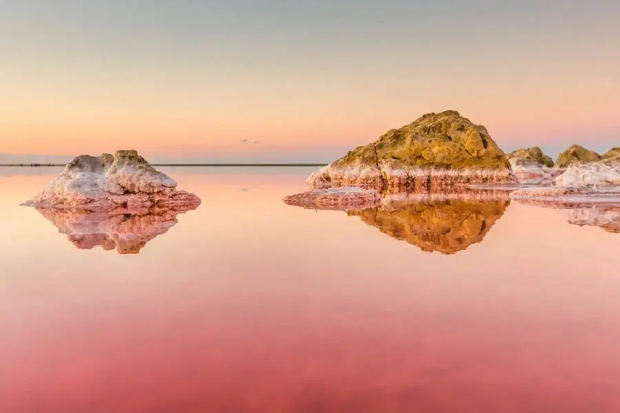
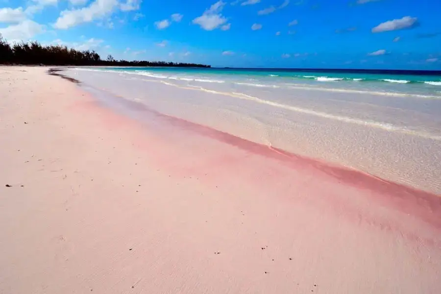
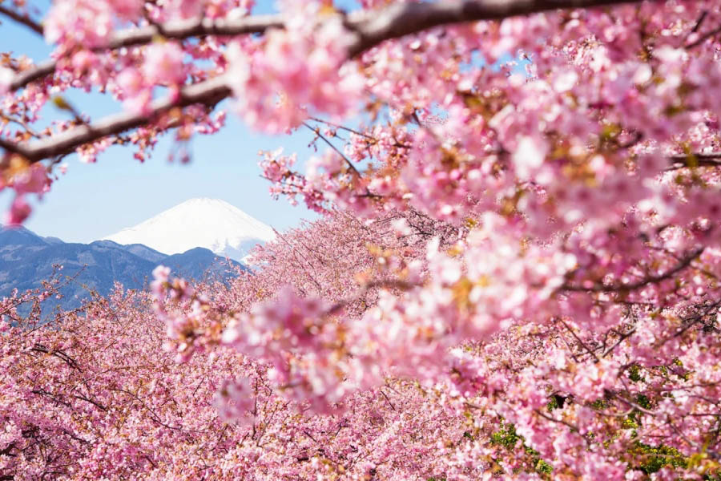

Розовые воды
Это озеро, расположенное в южной части Керченского полуострова, считается одной из самых необычных и живописных достопримечательностей Крыма. В водоёме произрастает водоросль дуналиелле салине (dunaliella salina), которая в процессе своей жизнедеятельности вырабатывает бета-каротин. Весной это вещество окрашивает соляные кристаллы озера в нежно-розовый оттенок и придаёт им характерный запах фиалок. Соляные айсберги, застывшие над зеркальной гладью озера, образуют невероятные, фантастические пейзажи.

Кояшское озеро (Крым)
И пески...
Пляж «Розовые пески» (Багамы)

Если вы планируете отдых на Багамах, обязательно загляните на остров Харбор. Здесь есть пляж, покрытый мягким бледно-розовым песочком. Протяжённость розовой полосы составляет пять километров. Причиной её необычного оттенка является фораминифера (Foraminifera) — морской микроорганизм с раковиной красноватого цвета. После отмирания фораминифер их раковины попадают на дно, там они крошатся и смешиваются с белым песком, а затем с волнами выносятся на береговую линию.
И куда же без сакуры
С февраля по май, когда в Японии расцветает сакура (дикая вишня), страна превращается в огромное розовое облако. В этот период японцы отмечают праздник любования цветами — ханами. Местные жители устраивают под цветущими деревьями пикники. Самым известным местом для ханами является парк Уено, расположенный в Токио. В начале весны здесь расцветает около 9000 вишнёвых деревьев. Сакуру в парке подсвечивают снизу маленькими фонариками,а сверху высокими фонарями из рисовой бумаги. Мягкая подсветка позволяет любоваться цветами даже в тёмное время суток.

Цветущие сады сакуры (Япония)